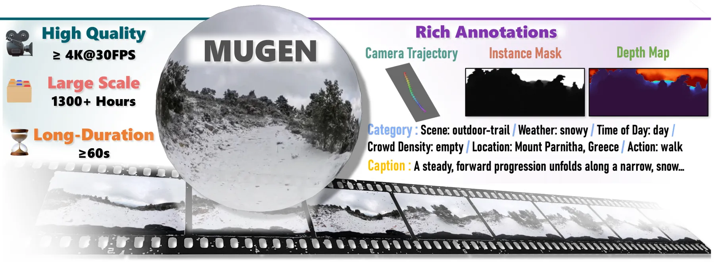
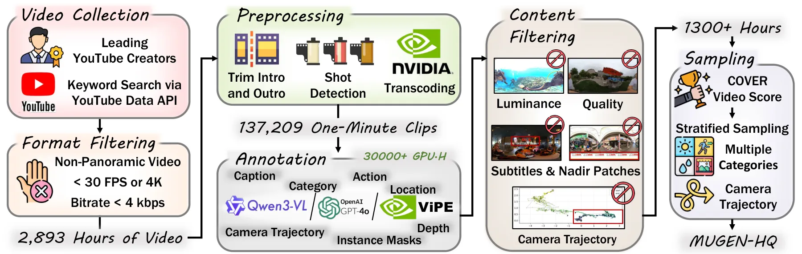
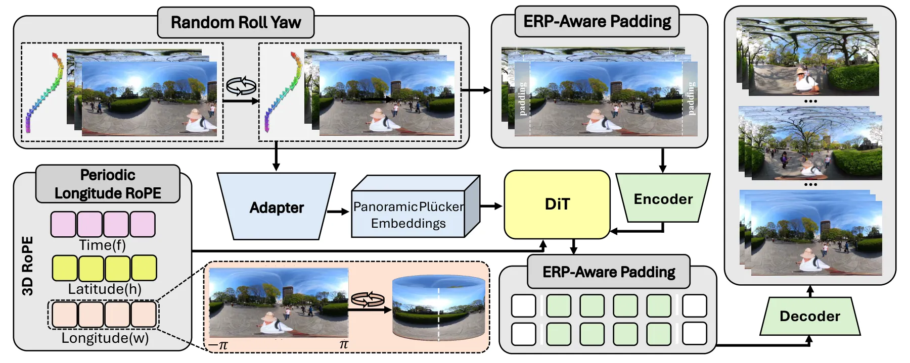

SIGGRAPH Asia 2026 · Conference Papers
Interactive Panoramic
World Exploration
via Camera Control
1 Beijing Institute of Technology2 Alaya Lab3 Shenzhen MSU-BIT University
* Work done during an internship in Alaya Lab. † Corresponding authors.

Overview
Explore beyond the frame.
Interactive panoramic video generation aims to synthesize immersive 360° videos that remain visually coherent while following user-specified camera trajectories during exploration. However, progress is limited by a coupled data-and-model gap: existing panoramic video datasets are often short, weakly annotated, or lack camera trajectories, while existing camera-controlled video generation models are designed for perspective videos and do not directly support panoramic geometry.
We introduce MUGEN, a large-scale real-world panoramic video dataset with over 1,300 hours of at least 4K videos and rich semantic and geometric annotations, and Wan360, a camera-controllable panoramic video generation model. Wan360 adapts a perspective video backbone with three parameter-free ERP-aware components and a panoramic Plücker embedding, enabling high-quality, temporally coherent 360° video generation.
01 / Generation
A panorama. A trajectory. A world in motion.
Wan360 generates panoramic videos conditioned on an input panorama, a text prompt, and a target camera trajectory.
Generated videos are shown in equirectangular projection (ERP).
02 / Dataset
MUGEN
Real-world panoramic videos with captions, scene attributes, locations, camera trajectories, instance masks, and depth.
- 1,318 hours
- Curated panoramic footage
- ≥ 4K
- Source video resolution
- 60 seconds
- Continuous clips
- 300 hours
- MUGEN-HQ training subset

03 / Method
Wan360
Adapting perspective video generation to the geometry of a 360° world.

Panorama-aware generation
Periodic longitude RoPE, ERP-aware padding, and random roll yaw address cyclic seams and yaw consistency without adding trainable parameters.
Camera trajectory control
A panoramic Plücker embedding represents camera motion using spherical ERP rays in place of perspective pinhole rays.
Reference
Citation
@inproceedings{tan2026panoramic,
title = {Interactive Panoramic World Exploration via Camera Control},
author = {Tan, Jiaming and Li, Zhen and Shi, Shuwei and Teng, Minggui
and Yang, Siqi and Wu, Yuwei and Zheng, Bo
and Zhang, Kaipeng and Li, Chuanhao},
booktitle = {SIGGRAPH Asia 2026 Conference Papers},
year = {2026},
doi = {10.1145/3829340.3842301}
}